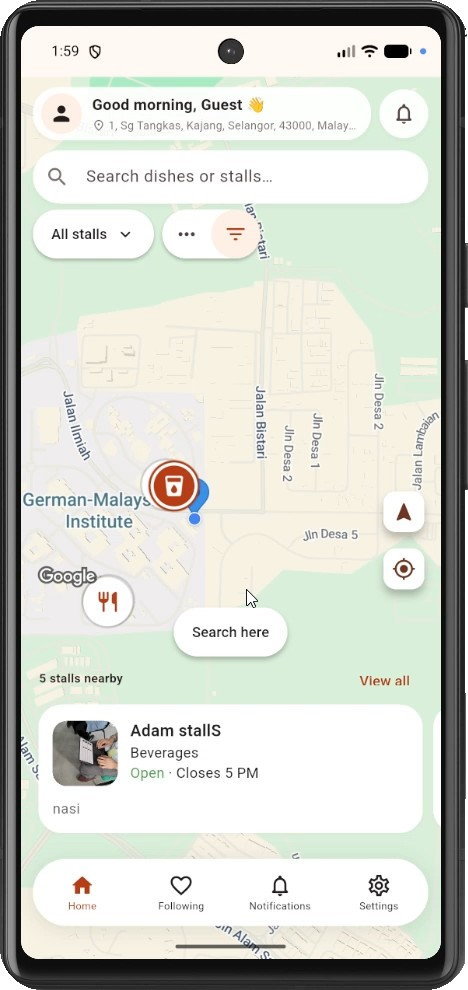
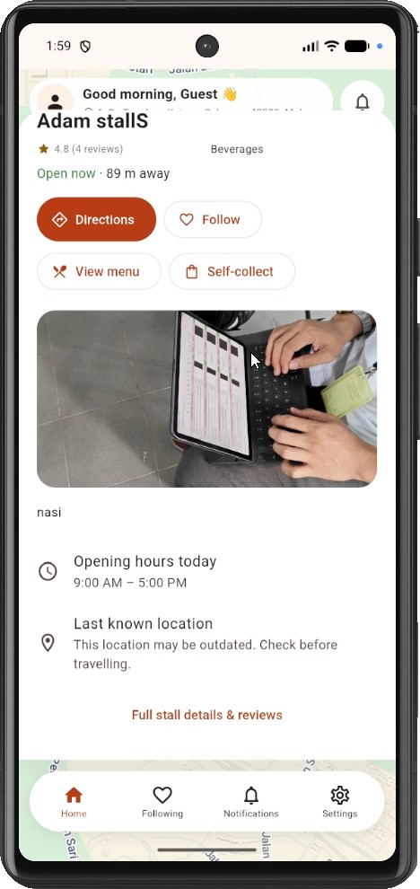

Share where you’re open
Maintain your business hours, set temporary closures, and share your location while your stall is open.
Locate mobile and roadside food stalls, browse their menus, and check availability before you head out.
Explore stalls on the webOur FYP mobile app hasn’t been published yet. Try the web version on iPhone or Android, with no download needed.


Small food vendors can be easy to miss online. Mobile stalls change locations, and a stall that was open yesterday might be closed or sold out today.
StallSeeker brings vendor-shared locations, menus, and availability into one place, so customers have more information before making a trip.
Explore the app’s discovery and self-collection features.
Discover what’s around you.
Locations, opening status, and food availability depend on updates from each vendor. Check the latest information before travelling.
Set up a stall profile and keep nearby customers informed about where you are and what you’re serving.
Open web app as a vendorMaintain your business hours, set temporary closures, and share your location while your stall is open.
Add dishes, prices, and menu images. Update stock status when an item becomes unavailable.
Manage customer booking requests and update their status from your vendor account.
StallSeeker is a mobile application developed for a final-year project in food stall discovery.
The mobile app hasn’t been published yet. To let people try the project now, we’ve made a web version available first. You can use it in a browser on iPhone or Android without installing an app.
The project addresses limited online visibility for small vendors, changing stall locations, and uncertainty about food availability.
Project reference: SWE/134/24B
Connect customers with nearby food vendors through searchable profiles and digital menus.
Display vendor-shared locations dynamically on an interactive map, including details about a stall’s last known location.
Let customers see stock updates and follow stalls or dishes for availability notifications before visiting.
Project scope. Customers discover stalls and request self-collection. Vendors maintain stall information and review requests. The screenshots show the project app; individual stall information depends on updates shared by vendors.
A few details about access, availability, and self-collection.
StallSeeker is a mobile application for food stall discovery, developed as a final-year project. It connects customers with nearby mobile and roadside food vendors through map discovery, menus, availability updates, and self-collect booking requests.
Yes. The mobile app hasn’t been published yet, so a web version is available first at stallseeker.my. Open it in a browser on iPhone or Android. No app download is needed.
You can explore stalls as a guest. Features such as following stalls and managing bookings require sign-in. Vendors register an account to manage their stall.
Vendors share their locations, opening status, menus, and availability. Mobile stalls may move and food may sell out, so check the latest update and any location warnings before making a trip.
Choose a stall and send a self-collect booking request in the app. The vendor reviews the request, and you can track its status. Wait for vendor acceptance before collecting. You pick up the food at the stall.
Open StallSeeker and register as a vendor to set up your stall details, menu, business hours, and location. You can then update availability and manage booking requests.